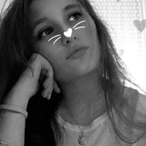

Welcome to my profile page 👋
Hey you ! I'm Jessica Maria Kochanowski, I'm 19 and I come from Poland. Both of my parents come from Poland so, I'm really proud of being polish because I'm lucky enough to discover another wonderful culture which in reality is little known to the people . I'm passionate by dance and cooking since I'm a little girl, I'm born with those passions and that's why I joined ESSEC Dance Crew 6 months ago. Take a look at what we do there you could be surprised !
ESSEC Dance CrewPoland
My whole family comes from Poland so obviously I consider myself as a real polish girl. Not only do I speak the language of the country fluently but I also have the culture of it since I go there at least once a year and I also love to share this culture and our traditions to all those who are curious to discover our marvellous traditions.
Tourism office of PolandDance 💃
Dance is something that has always been present in my life. I've been dancing since I was 4 years old so, I have been in many dance clubs, including the one of ESSEC. Besides being a leisure, this sport allows me to relax, express myself and to calm down whenever I'm in a bad mood.
Cooking 👨🍳
Another true passion I have is cooking. Because my father is chef in a restaurant near Paris, I had the opportunity to discover cooking from my youngest age. Even though I don't have that much time, I try to improve my cooking skills by preparing new dishes to my friends who love to try them and to enjoy what I cook !